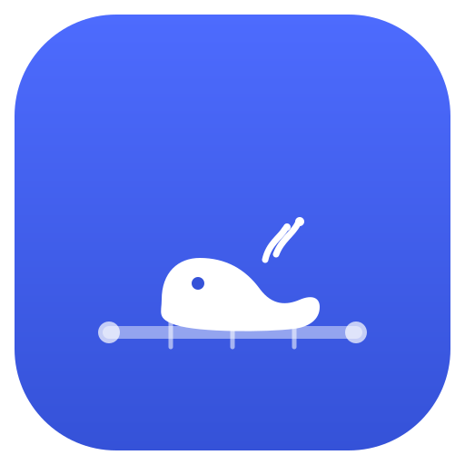

Tools
文章发布时间:
最后更新时间:
文章总字数:
预计阅读时间:
页面浏览: 加载中...
最后更新时间:
文章总字数:
1.2k
预计阅读时间:
4 分钟
页面浏览: 加载中...
欢迎来到我的工具页面！这里收录了我自己做过的所有项目——小工具、游戏、小网页、Bot 插件等等，按影响力从上往下排。当然还有收藏的网站与编程常见问题解答，如果对你有帮助的话荣幸至极！
Itsuyoの工坊
| 工具 | 描述 |
|---|---|
| MapuMap 赛马娘血统图谱 |
收录 173 位角色、11,000+ 关系的赛马娘血统 Atlas：从 1680 到 2021，沿着真实赛马的系谱与年代逐点展开角色间的关系网络，支持放射状总览与自由缩放。 |
| 滑动变祖器  |
31 级梁系强度校准器，还加入了用户评价功能。全新的代码部分由大肥鱼v4pro 操刀。 |
| Uma Card Maker |
简便的赛马娘支援卡DIY制作器，支持基础的编辑与下载。 |
| Anime-Browser |
寻找免费动漫源！动漫信息聚合查询工具，还有跨平台的桌面端 App。 |
| dsh-plugin-working-status |
把 DeepSeek Harness 思考状态里那句 “Deep diving…” 改成你喜欢的任何话——点击即改，全局生效，重启都不忘。 |
| A股分析 |
A 股在线分析小站：输入代码即可查看个股的技术面图表与数据速览。 |
| 日本动漫题材竞速 |
日本动漫题材季度竞速动画（1963 冬 → 2026）：看各题材谁在称王、谁在陨落、何时易主，动漫圈趋势一览无余。 |
| ai-hedge-fund-skill |
复刻 virattt/ai-hedge-fund 的 19-Agent AI 对冲基金，做成了 WorkBuddy 技能一键安装（AI 辅助生成，仅供学习探讨）。 |
| Cricket Arena 斗蛐蛐竞技场 |
斗蛐蛐竞技场：25 位机制各异的球形英雄自动对战，支持确定性回放、横竖屏 MP4 导出、生涯模式与投资大师课，浏览器直接开玩。 |
| Neon Protocol Zero |
霓虹赛博风的射击游戏 Final 版，与 Google AI Studio 协力打造，但真的很好玩！ |
| CyberPongK |
霓虹风格的 Pong 小游戏，配上赛博音效相当带感；另有移动端触屏版。 |
| 角色关系图 grids |
二次元角色关系图生成器：从 Bangumi / AniList 拉取角色数据，一键生成 4×4 角色关系网格图。 |
| Novel Reader |
轻量级、便捷的 TXT 小说阅读器：本地拖入即读，下载的 txt 再也不用忍受记事本了。 |
| 野兽先辈加密器 |
以”哼””哈””啊”和感叹号为字符的加密方式，本质是凯撒 + 二进制 ASCII 一一对应，CS 课作业的疯狂产物。 |
| Pic_Hide_Barcode |
在一张普通图片里隐藏二维码，可以被微信识别。我改的，功能更多一点。注意，在ios上成功率高，其他的上面有不小概率失败。 |
| maimaiDX-local |
本地阉割版 maimaiDX 工具箱：无需机器人框架即可在本地查分，移植自 Yuri-YuzuChaN 的项目，随缘更新。 |
| D-vidlization |
简单好用的小工具：从单个或多个视频中批量提取音轨，一行命令搞定。 |
| UPTG |
Uma Pmx Texture Generator：处理从 Uma Viewer 提取的 PMX 模型，自动合成简单粗暴但效果还不错的材质文件。 |
| Sakayori Planner ver.168 |
可可爱爱但很能打的计划小助手：Vite + React 打造的顺滑日程规划体验，还预留了 AI 能力接口。 |
| wps-online-2026 |
其实是摸鱼神器：伪装成在线文档的网页，老板走过也不怕。 |
| Terra |
一些很酷的 AI 生成 3D 效果，配上充满逼格的明日方舟语录（语录搜集自 bilibili）。 |
| Taylor-Series-3D-Visualizer |
泰勒级数 3D 可视化器：把多项式逐阶逼近函数的过程立体地摆在你眼前。 |
| NekoPunchNyanNyan |
Neko Punch!!!!! 用于 CS 自我评估的猫猫拳小站（nyan nyan nyan nyan）。 |
| picture-file-extension-fix |
一键修复 png / jpg / gif 图片文件扩展名的小工具，下载坏了后缀的图再也不怕。 |
| 2048-114514 |
2048 魔改版：细菌融合 2048，越合成越离谱。 |
| Bacterial-Fusion-Big-Watermelon |
合成大西瓜，但是细菌：经典合成大西瓜的细菌魔改版。 |
| Danmaku-Feast |
kira kira ☆ doki doki ♡ 的弹幕射击游戏原型，Boss 战弹幕地狱初号机。 |
如果感兴趣的话可以点击超链接去看看喵~以后会持续更新！
贡献项目
一些给开源社区与 Bot 生态做的插件~
| 工具 | 描述 |
|---|---|
| astrbot_plugin_yunshi |
AstrBot 二次元运势插件：发送”运势”即可抽一张运势签图，支持设置每个用户的冷却时间，轻量无负担。 |
| astrbot_plugin_constellation |
AstrBot 星座运势插件：直接发送星座名即回复对应文字运势，正则匹配无需前缀，轻量全平台。 |
| astrbot_plugin_maimaidx |
maimaiDX 的 AstrBot 插件版：不用本地部署，在群里直接查舞萌 DX 成绩。 |
值得书签
一些我觉得很有意思的网站与工具~
持续更新~
编程FAQ
一些我在编程途中经常遇到要查的问题~
持续更新~